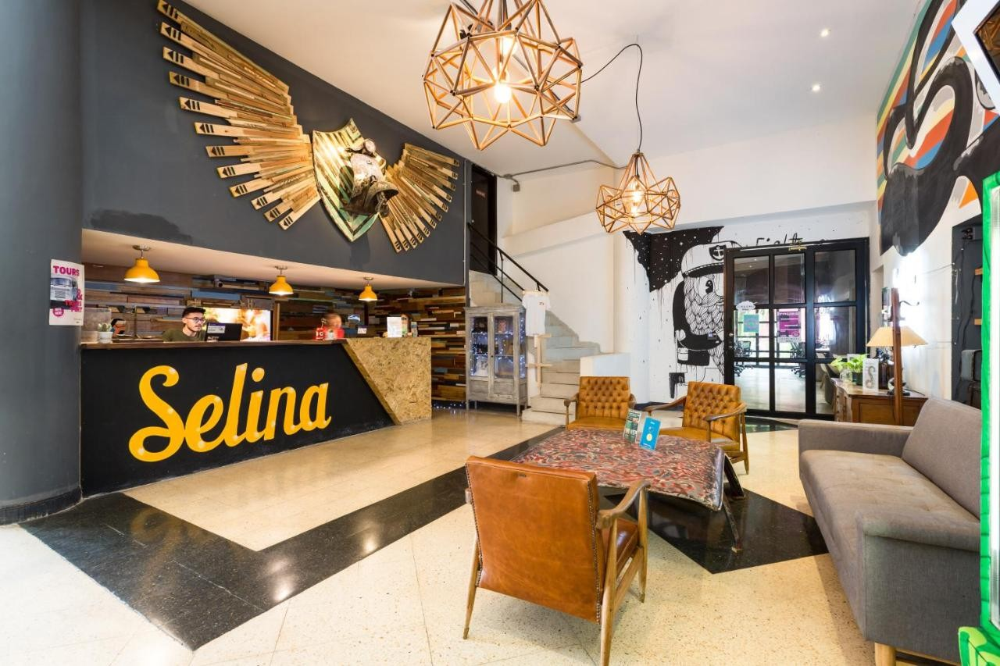
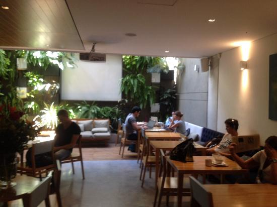
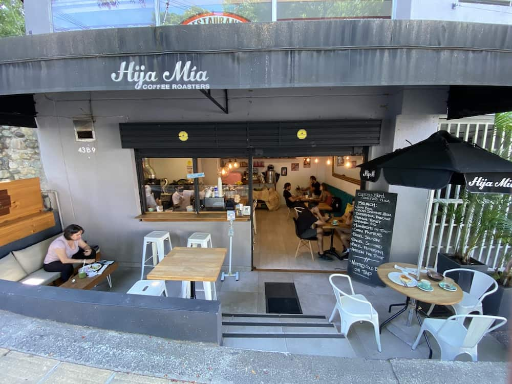
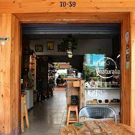
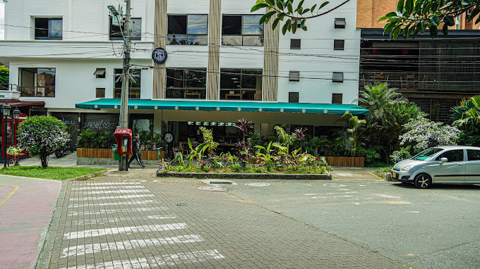
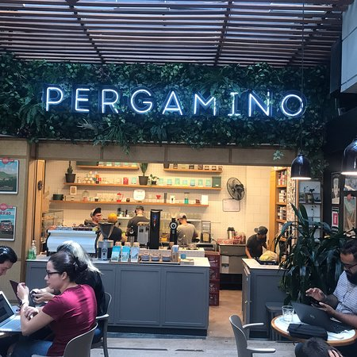

This is a hostel with a unique and cozy style, combining classic decoration trends with many modern details and ecological
Gallery
Rango Hostel Boutique
Provenza is the fashionable neighborhood in Medellín, and the incredible hostel Selina Medellín. It is a comfortable place with different hosting plans with all types of prices They adapt to your travel budget. It is a great option if you are thinking about enjoying Medellín while working remotely. You will be able to delight yourself with the gastronomy so characteristic of the area or have fun with all the experiences available. It has cafeteria, cinema room, wellness area, CoWorking and more.
see moreSelina
Velvet Café is also a good option if you are looking for work in Medellin. Firstly, because its machinery reduces the level of experience requested. Consequently, even if you don't know much on these drinks you will have a good chance of winning a position. Another aspect that makes this one of the best coffees for Working in Medellín is your security. Even though your schedule is Quite spacious, the premises are well protected. Of that So you won't have to worry when night comes and you're still inside him.
Cafe Velvet
Outdoor Seating, Seating, Wheelchair Accessible, Serves alcohol, Wine and beer, Free Wi-Fi, Table service, Takeaway View all details features, Race 37 No 8a-46 Vía Primavera - Poblado
Hija mia cafe
A spectacular place in a traditional sector of Medellín, 70. It offers healthy, vegetarian and vegan food, as well as wines and Bleeding. It also has an Internet cafe and coworking. Their Preparations are different and delicious. Wow, very good Parking experience: There are parking lots in the area and there are also those on the street, all paying
Naturalia Cafe
Semilla Cafe Coworking is a business located on Calle 39, Cra. 73 #7 in the city of Medellín. This coworking space is a lot more than just a place to work, since it also has an espresso bar, internet cafe and restaurant, thus providing a complete experience for your customers.
Semilla cafe
The WiFi password is located at the top of your receipt, and changes often, so you may need to reset it every few days. The outlets are located inside, under the bar or on the walls under the seats. It gets pretty busy at the afternoon/note.Great internet. One of the good cafes in the heart of Poblado. Good atmosphere, lots of other people on laptops. Many Outside seating in the middle of the nice neighborhood. If you need to charge you may need to get there early, there are only a couple below the top bar
Pergamino cafe
Located in the heart of El Poblado, Quokka Coworking redefines the Coworking concept in Medellín. More than just a cowork, We offer advanced meeting rooms, a soundproof room for Maximum concentration, an auditorium for your big events and a Modern media room perfect for recordings. added to our private offices, we guarantee an environment adapted to all your needs. At Quokka, more than a space for work, you will find an ecosystem for innovation and networks. Come and live the Poblado Coworking experience in its full expression!